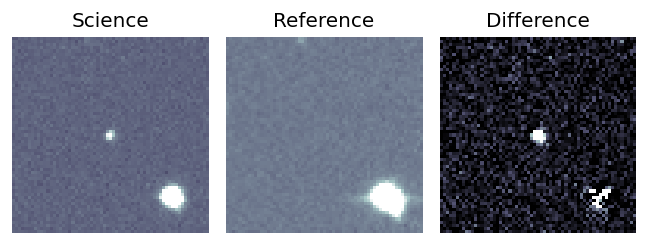
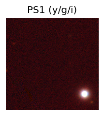
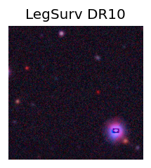
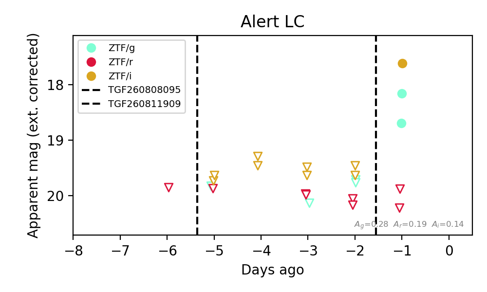
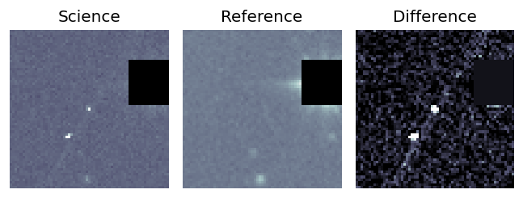
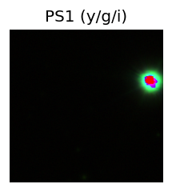
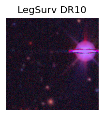
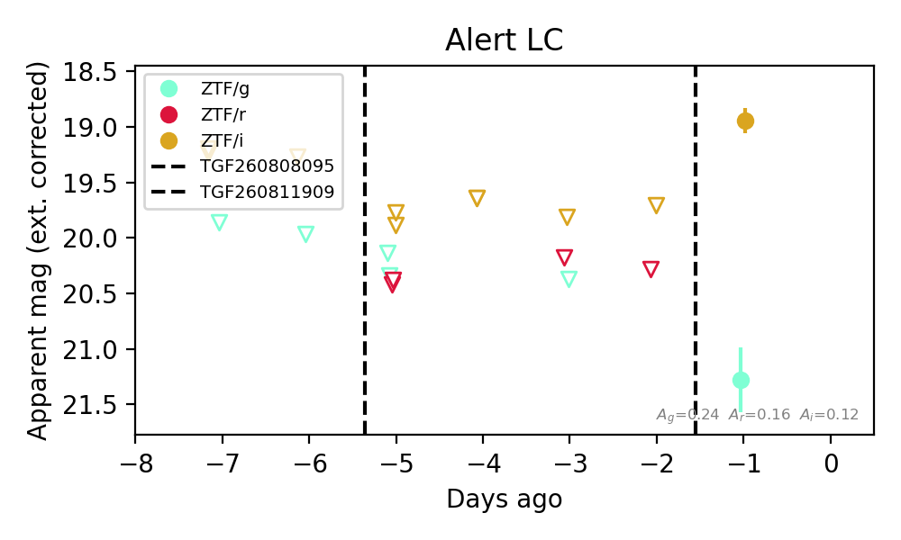

Candidate List 20260813Last night — ZTF: 459 passed basic cuts (123 young) · LSST: 0 passed basic cuts (0 young)Previous Day Next Day
Section 1: New Sources (age<1d) Section 2: Old (1-5d) sources observed last nightplaceholder
Section 1: New Afterglow/FBOT Cands Last Night (0)
Section 2: Older Sources Observed Last Night (2)
0. [ZTF] ZTF26abntiza (Afterglow?) [Back to Top] [Share] [Trigger Swift] [Fritz Alert] [Fritz Source] [Lasair]RA, Dec: 34.01256, 15.51356 2h16m3.01s, 15d30m48.80sGalactic (l, b): 151.1568, -42.67353 WARNING: 1.78 deg from ecliptic plane ext(g-r) = 0.089


TESS: Sectors [42 43 70 71]
PS1: 0 sources in 3 arcsec
LegacySurvey: 0 sources in 3 arcsec

Extinction-corrected gr color:
From alerts: -1.66 +/- 99 mag
Extinction-corrected gi color:
From alerts: 0.95 +/- 0.06 mag
Extinction-corrected ri color:
From alerts: 2.61 +/- 99 mag
Consistent with synchrotron, g-r>0!
Rise Rate:
g: 35.8 mag/day
i: 2.0 mag/day
Fade Rate:
1. [ZTF] ZTF26abntxps (FBOT?) [Back to Top] [Share] [Trigger Swift] [Fritz Alert] [Fritz Source] [Lasair]RA, Dec: 5.1261, 14.02308 0h20m30.27s, 14d 1m23.10sGalactic (l, b): 111.64324, -48.16948 ext(g-r) = 0.076


TESS: Sectors [42 43 57 70 84]
PS1: 0 sources in 3 arcsec
LegacySurvey: 1 sources in 3 arcsec Closest: d = 1.79 arcsec, 230.2 deg (east of north) photoz=1.0 (68% bounds 0.9, 1.1), type=EXP peak abs mag (ext. corrected) = -25.2 (68% bounds -24.92, -25.47)

Extinction-corrected gi color:
From alerts: 2.33 +/- 0.31 mag
Consistent with synchrotron, g-r>0!
Rise Rate:
i: 0.74 mag/day
Fade Rate: